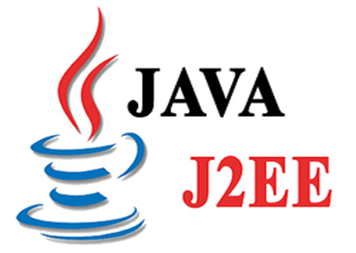

La Fondation Eclipse, nouveau propriétaire de Java Enterprise Edition (Java EE)
La Fondation Eclipe, à laquelle Oracle vient de céder la propriété intellectuelle de Java EE, a fait part des prochains changements qu'elle apportera à la gestion de la spécification destinée aux applications d'entreprise. En premier lieu, Oracle va passer les kits de compatibilité technologique Java EE (TCK), qui permettent de vérifier qu'une implémentation est conforme à Java, en open source. Un changement qualifié de « tout à fait fondamental dans la dynamique de l'écosystème » par Mike Milinkovich, le directeur exécutif de la Fondation Eclipse. La disponibilité des TCK en open source permettra aux utilisateurs de tester eux-mêmes la conformité sans passer par le « modèle pay-to-play », comme l'appelle le directeur exécutif.
« Les TCK permettaient à Oracle d'exercer un contrôle sur l'écosystème Java EE » a-t-il déclaré. « Des TCK open source devraient, espérons-le, amener d'autres fournisseurs à la table de Java EE pour créer des implémentations », a ajouté Mike Milinkovich.
Quid des grandes évolutions du langage PHP cette année, et de PHP 7.2 ?
La sortie de PHP 7.2 est prévue pour fin novembre. Cette version, actuellement en bêta (ou RC2, ndlr), va introduire beaucoup de nouveautés. Parmi les plus importantes, on note notamment l'ajout de la librairie de sécurité libsodium. Elle apporte une nouvelle couche pour gérer le hash de mots de passe et le chiffrement de données. Avec PHP 7.2, certaines fonctionnalités du langage vont également commencer à être dépréciées, et donc renvoyer des messages d'erreur pour prévenir qu'elles seront retirées des prochaines versions. L'idée est de préparer le terrain en vue de la sortie de PHP 8 prévue d'ici trois ans. La France est très impliquée dans le lancement de PHP 7.2. Les deux release managers de cette version sont le Français Remi Collet et Sara Golemon, ex-développeuse de Facebook qui travaille désormais pour le cloud français Platform.sh.